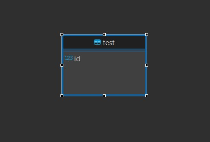

Bază de date reprezintă o colecție structurată de informații, organizată într-un mod care facilitează stocarea, accesul și gestionarea acestor date. O bază de date poate conține informații referitoare la o gamă largă de subiecte, precum utilizatori, produse, evenimente, rezultate școlare etc.
Gândiți-vă la o bază de date ca la o bibliotecă virtuală sau un depozit electronic unde puteți stoca și organiza diverse tipuri de informații. În loc să căutați prin mulțimea de documente fizice sau digitale pentru a găsi anumite informații, puteți accesa baza de date și căuta în ea cu ajutorul unor interogări.
Pentru a crea o bază de date, este nevoie de un sistem de gestiune a bazei de date (sgbd). Noi vom folosi SQLite în următoarele topicuri.
SQLite este o bibliotecă software care vă permite să creați și să utilizați baze de date într-un mod ușor și eficient. Este potrivit pentru aplicații și dispozitive care necesită o soluție de gestionare a bazelor de date portabilă și fără necesitatea unui server separat.
DBeaver este un client universal pentru baze de date, care oferă un mediu de lucru integrat pentru gestionarea și interogarea diferitelor tipuri de baze de date. Este un software gratuit și open-source, disponibil pentru diverse sisteme de operare, inclusiv Windows, macOS și Linux.
DBeaver este conceput pentru a oferi o interfață grafică intuitivă și puternică pentru a lucra cu baze de date. Prin intermediul DBeaver, puteți conecta și gestiona diverse tipuri de baze de date, cum ar fi MySQL, PostgreSQL, Oracle, Microsoft SQL Server, SQLite și multe altele.
create table test(
id integer
)
Această interogare creează o tabelă test care are o singură coloană: id, de tipul int.
Click dreapta pe rădăcina bazei date (identifier.sqlite) și view diagram.
Dacă nu se vede diagrama din prima, un refresh (f5) ar trebui să rezolve problema ușor.
În diagramă se vede tabela test și atributele (coloanele) acesteia. To be continued...